20230929220926
1 lines · 11 points
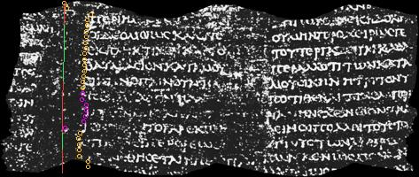
| gap | kept windows | step flags | one turn (vox) | switch would move gap (vox) | switch visible |
|---|---|---|---|---|---|
| 0 | 15 | 7 | 25,550 | nan | no |
The blank strip between two columns of text runs down a single wrap of the papyrus. This tool finds those strips on the ink renders of traced segments, follows each one down the column, maps it into the scan through the segment's mesh, and writes it as a same-winding point collection that the spiral fit reads as it is.
Gaps on the same scroll repeat every 32,192 voxels along the sheet (77.3 mm), the scribe's column pitch. The length of one turn grows by 561 voxels per winding, which puts the sheet spacing at 89.4 voxels (214 µm). Where one turn is close to a whole number of column pitches, the next wrap shows a gap at almost the same place, so a trace that slips one wrap still sees a gap. Around those windings the gaps cannot catch a switch; elsewhere a switch moves the gap sideways and the tool flags it.
Many windings of Paris 4 were traced more than once, by different runs. For every gap point the check looks for another segment whose mesh passes through the same spot on the same sheet (within half a sheet spacing along its surface normal), maps the spot into that segment's render, and asks what is there.
2,778 of 3,243 points had a second trace on the same sheet. The conflicts gather in a few segments: one of them, a re-flattened copy of an older trace, never confirms any gap from the others, which points to its render not lining up with its mesh rather than to a gap error (inferred, not yet checked by hand). The table lists conflicts with their coordinates so each can be opened in the scan.
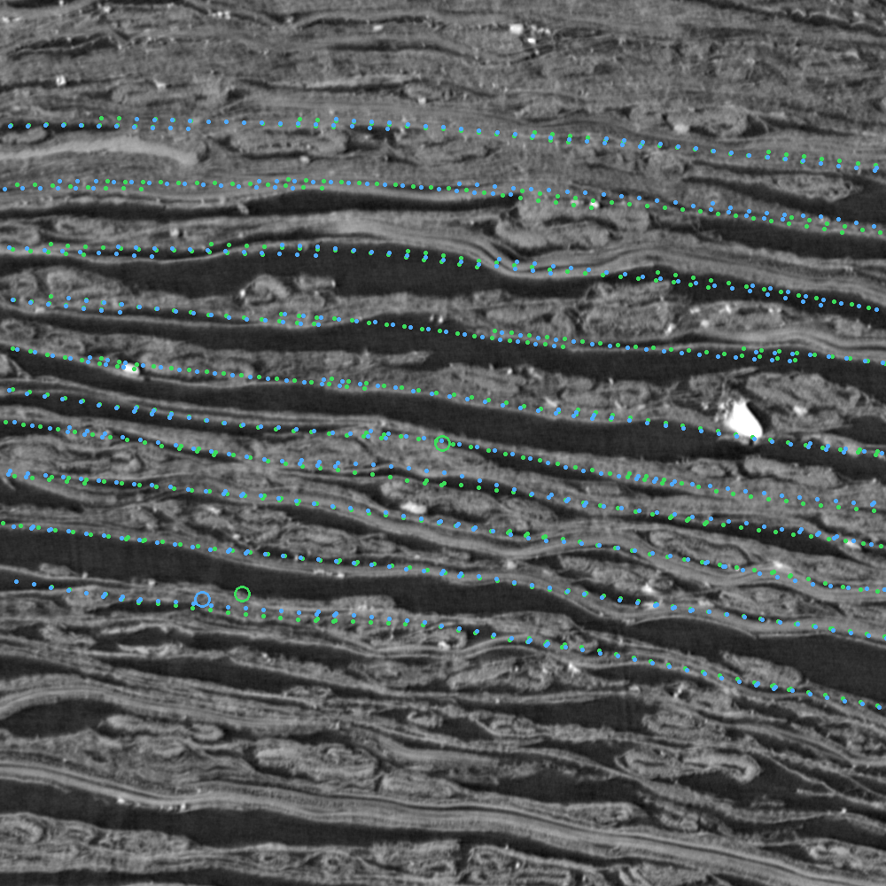
| gap from | second trace | x, y, z (voxels) | offset across sheet |
|---|---|---|---|
| 20231005123336 | 20230929220926 | 19262, 17787, 68840 | 39 |
| 20231005123336 | 20230929220926 | 19452, 16684, 66082 | 8 |
| 20231005123336 | 20230929220926 | 19528, 15985, 64199 | 21 |
| 20231005123336 | 20230929220926 | 19078, 15577, 58510 | 39 |
| 20231005123336 | 20230929220926 | 19005, 15404, 57540 | 34 |
| 20231005123336 | 20230929220926 | 18924, 15421, 56591 | 31 |
| 20231005123336 | 20230929220926 | 18494, 15096, 54102 | 31 |
| 20231005123336 | 20230929220926 | 18783, 14284, 52708 | 20 |
| 20231005123336 | 20230929220926 | 18792, 13911, 51875 | 32 |
| 20231005123336 | 20230929220926 | 18793, 13658, 50443 | 26 |
| 20231005123336 | 20230929220926 | 14319, 18955, 55474 | 30 |
| 20231005123336 | 20231007101619 | 21569, 17436, 60174 | 43 |
| 20231005123336 | 20231007101619 | 21522, 16745, 51768 | 13 |
| 20231005123336 | 20231007101619 | 20869, 17156, 51082 | 24 |
| 20231005123336 | 20231007101619 | 21478, 16622, 49172 | 4 |
| 20231005123336 | 20260623141135-w046-052_jordi | 18783, 14284, 52708 | 27 |
| 20231005123336 | 20260623141135-w046-052_jordi | 18792, 13911, 51875 | 37 |
| 20231005123336 | 20260623143441-w038-045 | 18494, 15096, 54102 | 6 |
| 20231005123336 | 20260623143441-w038-045 | 18783, 14284, 52708 | 4 |
| 20231005123336 | 20260623143441-w038-045 | 18792, 13911, 51875 | 4 |
| 20231005123336 | 20260623143441-w038-045 | 18826, 13737, 51179 | 13 |
| 20231005123336 | 20260623143441-w038-045 | 18793, 13658, 50443 | 5 |
| 20231005123336 | 20260623143441-w038-045 | 14319, 18955, 55474 | 6 |
| 20231005123336 | 20260701183126-w038-045 | 18783, 14284, 52708 | 12 |
| 20231005123336 | 20260701183126-w038-045 | 18826, 13737, 51179 | 11 |
| 20231005123336 | 20260701183126-w038-045 | 14319, 18955, 55474 | 6 |
| 20231005123336 | 20260701183126-w038-045 | 14471, 18326, 53592 | 0 |
| 20231005123336 | 20260701183126-w038-045 | 20869, 17156, 51082 | 15 |
| 20231005123336 | 20260701183126-w038-045 | 21118, 17027, 50583 | 14 |
| 20231007101619 | 20231005123336 | 14721, 20758, 67789 | 44 |
| 20231007101619 | 20260604223808-20231210121321_v8 | 20312, 17212, 50838 | 17 |
| 20231007101619 | 20260604223808-20231210121321_v8 | 21615, 15788, 43256 | 37 |
| 20231007101619 | 20260623142658-w028-037 | 20312, 17212, 50838 | 14 |
| 20231007101619 | 20260623142658-w028-037 | 21574, 16257, 47964 | 44 |
| 20231007101619 | 20260623142658-w028-037 | 21887, 15855, 46079 | 16 |
| 20231007101619 | 20260623142658-w028-037 | 21699, 15676, 42254 | 38 |
| 20231007101619 | 20260623142658-w028-037 | 21631, 15444, 39241 | 42 |
| 20231007101619 | 20260623143441-w038-045 | 14595, 16817, 57351 | 6 |
| 20231007101619 | 20260623143441-w038-045 | 15952, 10633, 39750 | 44 |
| 20231007101619 | 20260701183125-w028-037 | 20312, 17212, 50838 | 26 |
1 lines · 11 points

| gap | kept windows | step flags | one turn (vox) | switch would move gap (vox) | switch visible |
|---|---|---|---|---|---|
| 0 | 15 | 7 | 25,550 | nan | no |
3 lines · 66 points
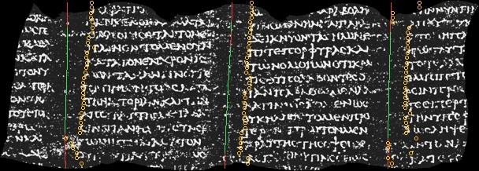
| gap | kept windows | step flags | one turn (vox) | switch would move gap (vox) | switch visible |
|---|---|---|---|---|---|
| 0 | 23 | 0 | 23,720 | 9,040 | yes |
| 1 | 25 | 0 | 23,120 | 9,640 | yes |
| 2 | 22 | 0 | 22,490 | 10,270 | yes |
2 lines · 82 points
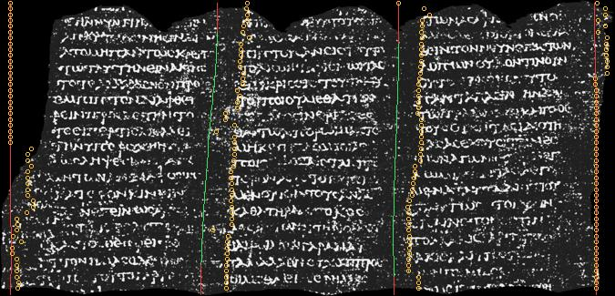
| gap | kept windows | step flags | one turn (vox) | switch would move gap (vox) | switch visible |
|---|---|---|---|---|---|
| 1 | 41 | 0 | 21,340 | 13,428 | yes |
| 2 | 41 | 0 | 20,400 | 14,368 | yes |
3 lines · 72 points
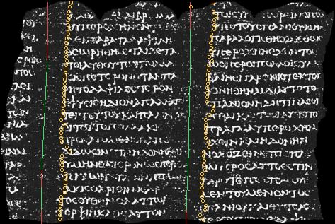
| gap | kept windows | step flags | one turn (vox) | switch would move gap (vox) | switch visible |
|---|---|---|---|---|---|
| 0 | 31 | 0 | 18,180 | 14,524 | yes |
| 1 | 41 | 0 | 17,410 | 15,294 | yes |
1 lines · 15 points
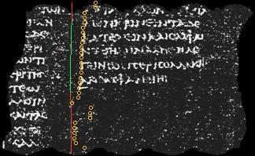
| gap | kept windows | step flags | one turn (vox) | switch would move gap (vox) | switch visible |
|---|---|---|---|---|---|
| 0 | 15 | 0 | 10,040 | nan | no |
3 lines · 39 points
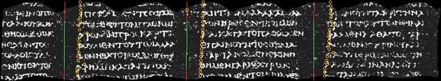
| gap | kept windows | step flags | one turn (vox) | switch would move gap (vox) | switch visible |
|---|---|---|---|---|---|
| 0 | 13 | 0 | 16,040 | 16,040 | yes |
| 1 | 13 | 0 | 14,910 | 14,910 | yes |
| 2 | 13 | 0 | 13,700 | 13,700 | yes |
1 lines · 13 points
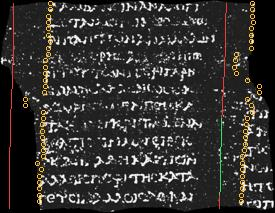
| gap | kept windows | step flags | one turn (vox) | switch would move gap (vox) | switch visible |
|---|---|---|---|---|---|
| 1 | 13 | 0 | 12,560 | 12,560 | yes |
1 lines · 29 points
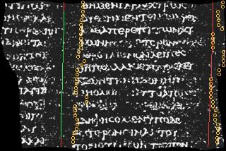
| gap | kept windows | step flags | one turn (vox) | switch would move gap (vox) | switch visible |
|---|---|---|---|---|---|
| 0 | 29 | 0 | 14,680 | 14,680 | yes |
1 lines · 6 points
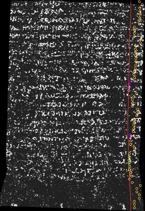
| gap | kept windows | step flags | one turn (vox) | switch would move gap (vox) | switch visible |
|---|---|---|---|---|---|
| 0 | 8 | 5 | 18,110 | nan | no |
6 lines · 79 points
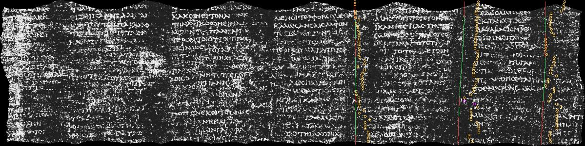
| gap | kept windows | step flags | one turn (vox) | switch would move gap (vox) | switch visible |
|---|---|---|---|---|---|
| 0 | 31 | 0 | 26,760 | 4,256 | yes |
| 1 | 31 | 2 | 26,120 | 4,896 | yes |
| 2 | 22 | 0 | 25,770 | 5,246 | yes |
8 lines · 99 points
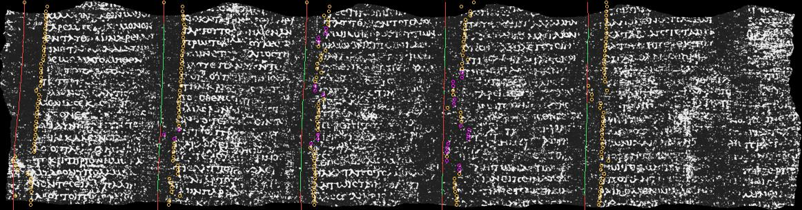
| gap | kept windows | step flags | one turn (vox) | switch would move gap (vox) | switch visible |
|---|---|---|---|---|---|
| 0 | 1 | 0 | 31,880 | 1,040 | no |
| 1 | 33 | 3 | 31,730 | 1,190 | yes |
| 2 | 29 | 10 | 31,040 | 1,880 | yes |
| 3 | 18 | 16 | 30,410 | 2,510 | yes |
| 4 | 32 | 0 | 29,820 | 3,100 | yes |
5 lines · 93 points
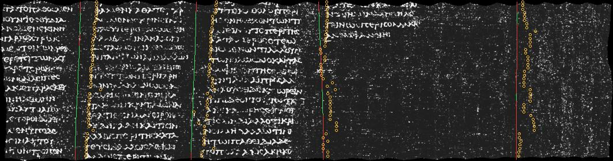
| gap | kept windows | step flags | one turn (vox) | switch would move gap (vox) | switch visible |
|---|---|---|---|---|---|
| 0 | 36 | 0 | 13,740 | 13,740 | yes |
| 1 | 39 | 0 | 12,320 | 12,320 | yes |
| 2 | 19 | 0 | 10,370 | 10,370 | yes |
| 3 | 7 | 0 | 6,750 | 6,750 | yes |
7 lines · 184 points
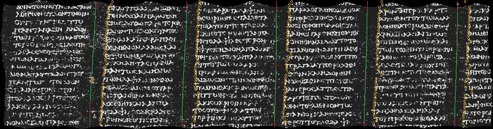
| gap | kept windows | step flags | one turn (vox) | switch would move gap (vox) | switch visible |
|---|---|---|---|---|---|
| 0 | 33 | 0 | 19,530 | 13,142 | yes |
| 1 | 39 | 0 | 18,520 | 14,152 | yes |
| 2 | 37 | 0 | 17,430 | 15,242 | yes |
| 3 | 39 | 0 | 16,200 | 16,200 | yes |
| 4 | 38 | 0 | 15,320 | 15,320 | yes |
3 lines · 53 points
| gap | kept windows | step flags | one turn (vox) | switch would move gap (vox) | switch visible |
|---|---|---|---|---|---|
| 0 | 34 | 0 | 23,960 | 8,024 | yes |
| 1 | 19 | 0 | 23,460 | 8,524 | yes |
6 lines · 95 points
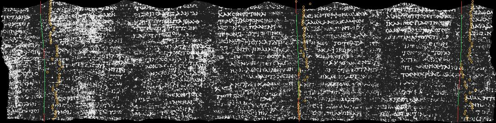
| gap | kept windows | step flags | one turn (vox) | switch would move gap (vox) | switch visible |
|---|---|---|---|---|---|
| 0 | 36 | 0 | 28,510 | 28,510 | yes |
| 1 | 32 | 0 | 26,730 | 26,730 | yes |
| 2 | 28 | 0 | 26,040 | 26,040 | yes |
9 lines · 122 points
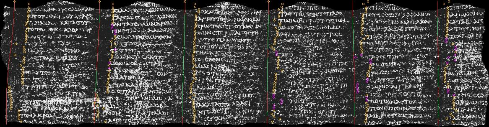
| gap | kept windows | step flags | one turn (vox) | switch would move gap (vox) | switch visible |
|---|---|---|---|---|---|
| 1 | 13 | 7 | 31,920 | 1,008 | yes |
| 2 | 39 | 0 | 31,020 | 1,908 | yes |
| 3 | 31 | 8 | 30,270 | 2,658 | yes |
| 4 | 21 | 12 | 29,730 | 3,198 | yes |
| 5 | 27 | 11 | 29,540 | 3,388 | yes |
4 lines · 61 points
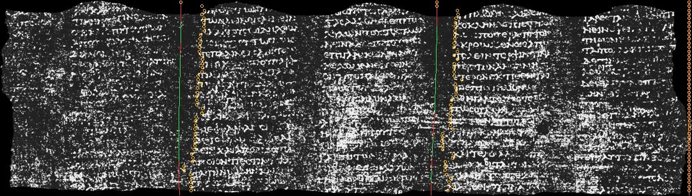
| gap | kept windows | step flags | one turn (vox) | switch would move gap (vox) | switch visible |
|---|---|---|---|---|---|
| 0 | 33 | 0 | 34,450 | 29,242 | yes |
| 1 | 32 | 0 | 33,000 | 30,692 | yes |
5 lines · 53 points
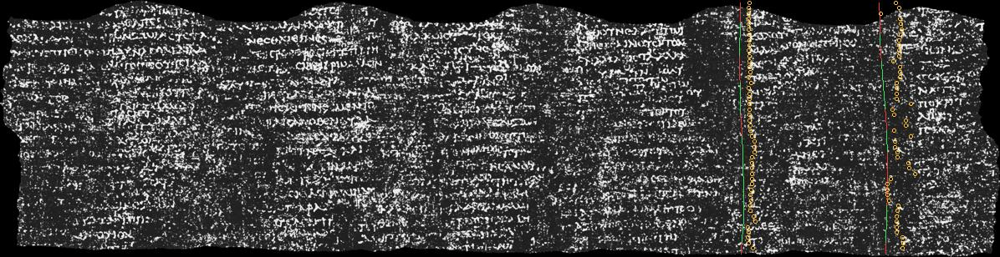
| gap | kept windows | step flags | one turn (vox) | switch would move gap (vox) | switch visible |
|---|---|---|---|---|---|
| 0 | 35 | 0 | 36,880 | 9,144 | yes |
| 1 | 26 | 0 | 36,720 | 8,984 | yes |
2 lines · 32 points
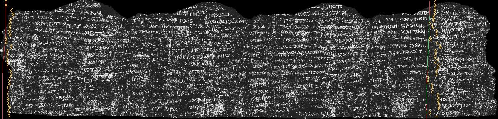
| gap | kept windows | step flags | one turn (vox) | switch would move gap (vox) | switch visible |
|---|---|---|---|---|---|
| 1 | 34 | 0 | 49,760 | 49,760 | yes |
4 lines · 41 points
| gap | kept windows | step flags | one turn (vox) | switch would move gap (vox) | switch visible |
|---|---|---|---|---|---|
| 0 | 31 | 3 | 53,240 | 860 | no |
| 1 | 20 | 10 | 52,950 | 570 | no |
3 lines · 36 points
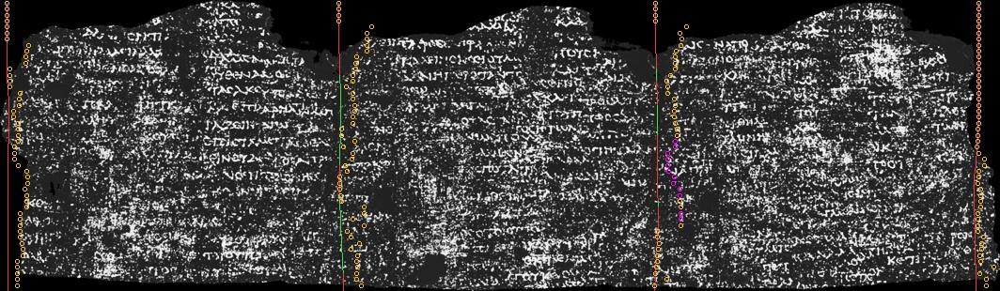
| gap | kept windows | step flags | one turn (vox) | switch would move gap (vox) | switch visible |
|---|---|---|---|---|---|
| 1 | 30 | 0 | 55,055 | 631 | no |
| 2 | 12 | 12 | 54,905 | 481 | no |
1 lines · 8 points
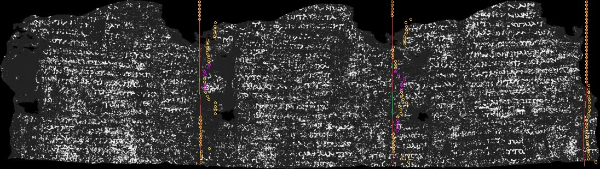
| gap | kept windows | step flags | one turn (vox) | switch would move gap (vox) | switch visible |
|---|---|---|---|---|---|
| 0 | 7 | 6 | 56,560 | 48 | no |
| 1 | 11 | 10 | 56,580 | 68 | no |
1 lines · 7 points
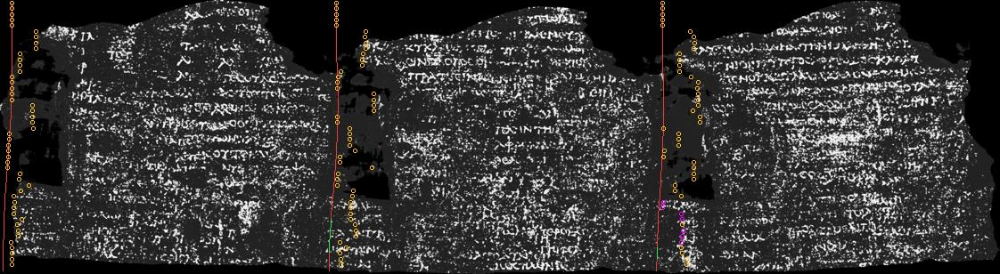
| gap | kept windows | step flags | one turn (vox) | switch would move gap (vox) | switch visible |
|---|---|---|---|---|---|
| 1 | 7 | 0 | 58,680 | 8 | no |
| 2 | 5 | 7 | 58,510 | 162 | no |
1 lines · 9 points
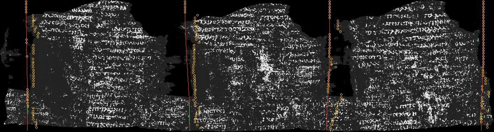
| gap | kept windows | step flags | one turn (vox) | switch would move gap (vox) | switch visible |
|---|---|---|---|---|---|
| 0 | 4 | 0 | 60,360 | 3,296 | yes |
| 1 | 9 | 0 | 60,040 | 2,976 | yes |
| 2 | 1 | 0 | 59,740 | 2,676 | no |
| 3 | 3 | 0 | 60,680 | 3,616 | no |
3 lines · 47 points
| gap | kept windows | step flags | one turn (vox) | switch would move gap (vox) | switch visible |
|---|---|---|---|---|---|
| 0 | 25 | 0 | 61,520 | 11,392 | yes |
| 1 | 5 | 0 | 62,390 | 12,262 | yes |
| 2 | 22 | 0 | 61,470 | 11,342 | yes |
| 3 | 8 | 0 | 62,240 | 12,112 | yes |
7 lines · 126 points
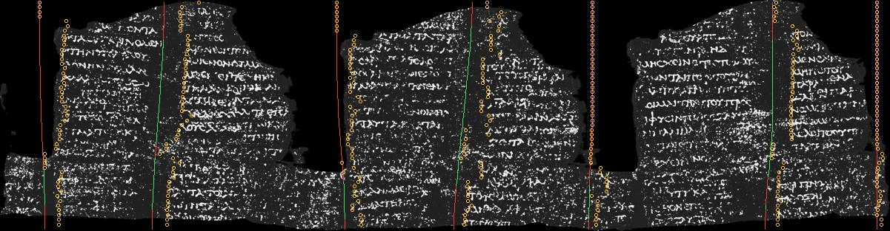
| gap | kept windows | step flags | one turn (vox) | switch would move gap (vox) | switch visible |
|---|---|---|---|---|---|
| 0 | 9 | 0 | 63,760 | 8,976 | yes |
| 1 | 36 | 0 | 62,960 | 8,176 | yes |
| 2 | 9 | 0 | 63,580 | 8,796 | yes |
| 3 | 35 | 0 | 62,585 | 7,801 | yes |
| 4 | 8 | 0 | 63,420 | 8,636 | yes |
| 5 | 32 | 0 | 62,210 | 7,426 | yes |
6 lines · 94 points
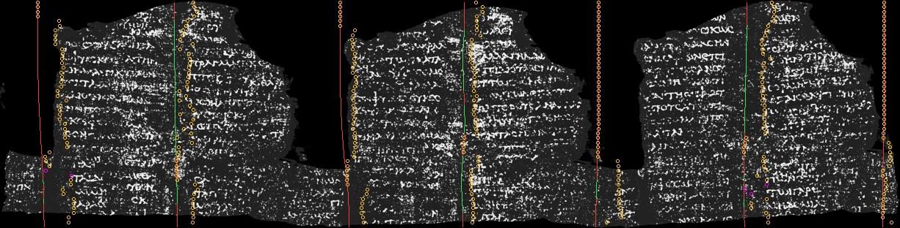
| gap | kept windows | step flags | one turn (vox) | switch would move gap (vox) | switch visible |
|---|---|---|---|---|---|
| 0 | 5 | 2 | 64,820 | 4,924 | yes |
| 1 | 36 | 0 | 64,020 | 4,124 | no |
| 2 | 2 | 0 | 64,750 | 4,854 | no |
| 3 | 34 | 0 | 63,835 | 3,939 | yes |
| 4 | 5 | 0 | 64,670 | 4,774 | yes |
| 5 | 29 | 3 | 63,440 | 3,544 | yes |
4 lines · 37 points
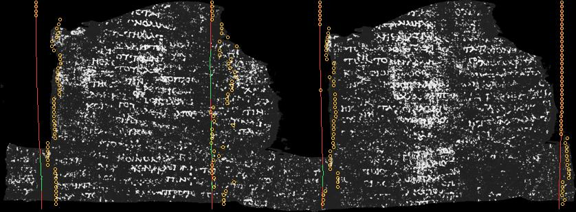
| gap | kept windows | step flags | one turn (vox) | switch would move gap (vox) | switch visible |
|---|---|---|---|---|---|
| 0 | 9 | 0 | 66,000 | 14,592 | yes |
| 1 | 25 | 0 | 64,770 | 15,822 | yes |
| 2 | 6 | 0 | 66,050 | 14,542 | yes |
2 lines · 42 points
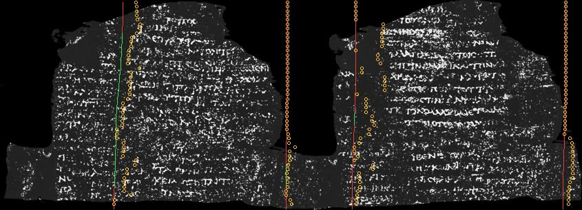
| gap | kept windows | step flags | one turn (vox) | switch would move gap (vox) | switch visible |
|---|---|---|---|---|---|
| 0 | 36 | 0 | 65,660 | 13,428 | yes |
| 1 | 6 | 0 | 66,860 | 12,228 | yes |
| 2 | 5 | 0 | 66,600 | 12,488 | yes |
3 lines · 23 points
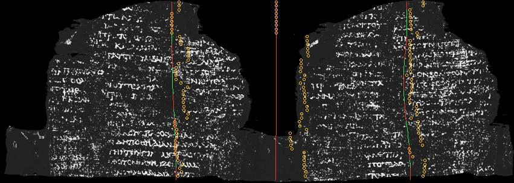
| gap | kept windows | step flags | one turn (vox) | switch would move gap (vox) | switch visible |
|---|---|---|---|---|---|
| 0 | 21 | 0 | 65,970 | 4,802 | yes |
| 2 | 27 | 0 | 66,140 | 4,972 | yes |
2 lines · 34 points
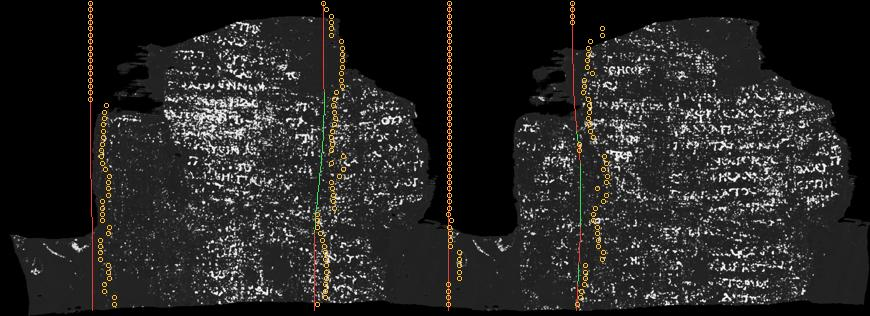
| gap | kept windows | step flags | one turn (vox) | switch would move gap (vox) | switch visible |
|---|---|---|---|---|---|
| 1 | 23 | 0 | 66,900 | 4,500 | yes |
| 3 | 18 | 0 | 67,300 | 4,900 | no |
2 lines · 47 points
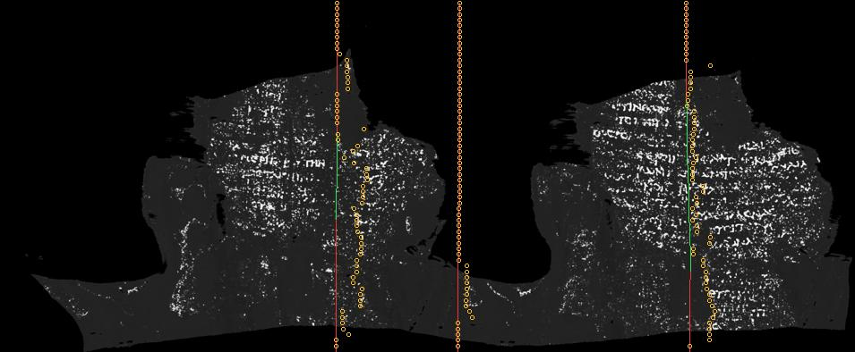
| gap | kept windows | step flags | one turn (vox) | switch would move gap (vox) | switch visible |
|---|---|---|---|---|---|
| 0 | 20 | 0 | 68,990 | 6,134 | no |
| 2 | 31 | 0 | 69,040 | 6,184 | yes |
1 lines · 7 points
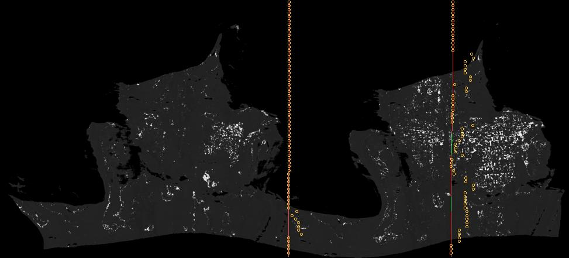
| gap | kept windows | step flags | one turn (vox) | switch would move gap (vox) | switch visible |
|---|---|---|---|---|---|
| 1 | 12 | 0 | 73,370 | 15,734 | yes |
5 lines · 121 points
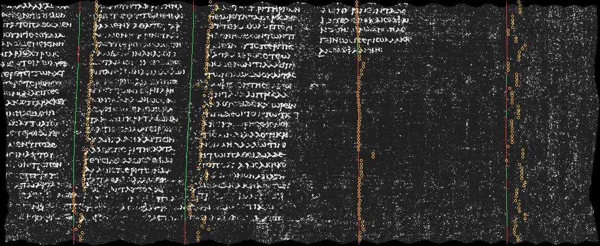
| gap | kept windows | step flags | one turn (vox) | switch would move gap (vox) | switch visible |
|---|---|---|---|---|---|
| 0 | 49 | 0 | 13,740 | 13,740 | yes |
| 1 | 59 | 0 | 12,310 | 12,310 | yes |
| 2 | 6 | 0 | 9,695 | 9,695 | yes |
| 3 | 24 | 0 | 6,625 | 6,625 | yes |
7 lines · 264 points
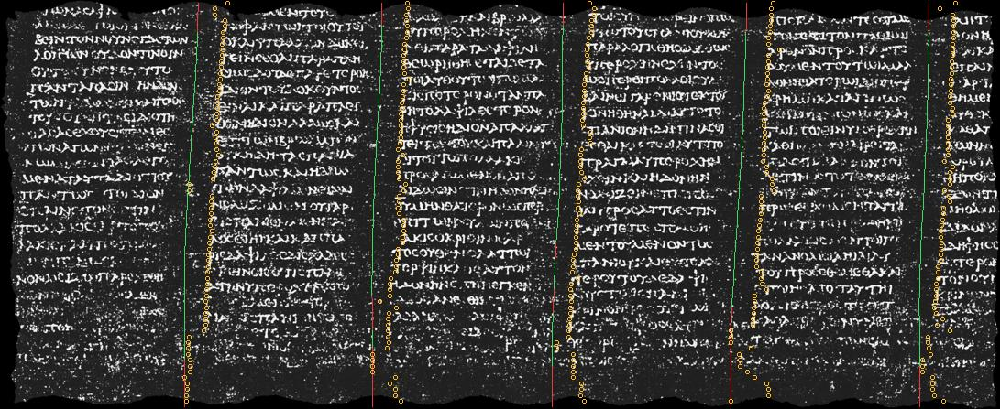
| gap | kept windows | step flags | one turn (vox) | switch would move gap (vox) | switch visible |
|---|---|---|---|---|---|
| 0 | 57 | 0 | 19,310 | 12,970 | yes |
| 1 | 51 | 0 | 18,120 | 14,160 | yes |
| 2 | 54 | 0 | 17,040 | 15,240 | yes |
| 3 | 49 | 0 | 15,935 | 15,935 | yes |
| 4 | 58 | 0 | 15,200 | 15,200 | yes |
8 lines · 192 points
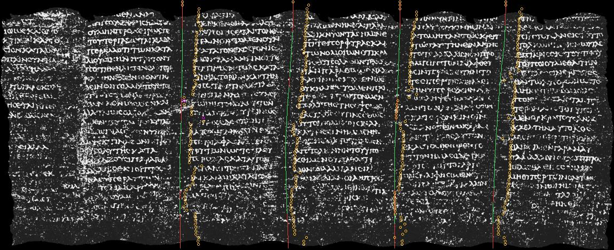
| gap | kept windows | step flags | one turn (vox) | switch would move gap (vox) | switch visible |
|---|---|---|---|---|---|
| 0 | 48 | 2 | 23,650 | 7,894 | yes |
| 1 | 53 | 0 | 22,730 | 8,814 | yes |
| 2 | 46 | 0 | 21,905 | 9,639 | yes |
| 3 | 56 | 0 | 21,210 | 10,334 | yes |
2 lines · 24 points
| gap | kept windows | step flags | one turn (vox) | switch would move gap (vox) | switch visible |
|---|---|---|---|---|---|
| 0 | 25 | 17 | 26,160 | nan | no |
9 lines · 136 points
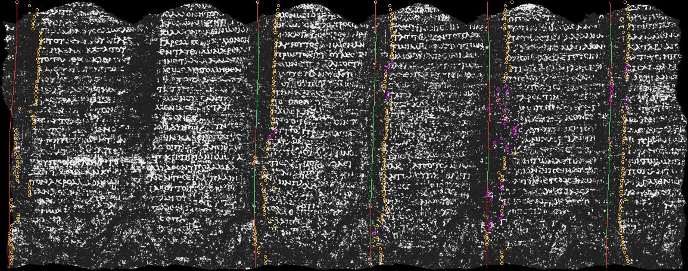
| gap | kept windows | step flags | one turn (vox) | switch would move gap (vox) | switch visible |
|---|---|---|---|---|---|
| 1 | 42 | 3 | 30,360 | 1,652 | yes |
| 2 | 47 | 7 | 29,675 | 2,337 | yes |
| 3 | 25 | 27 | 29,375 | 2,637 | yes |
| 4 | 42 | 8 | 29,340 | 2,672 | yes |
4 lines · 94 points
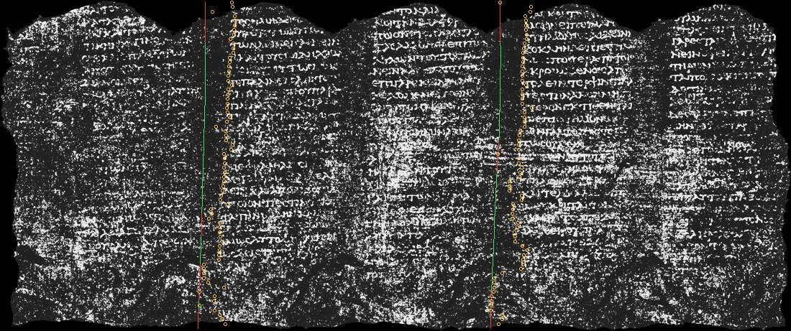
| gap | kept windows | step flags | one turn (vox) | switch would move gap (vox) | switch visible |
|---|---|---|---|---|---|
| 0 | 48 | 0 | 35,130 | 30,326 | yes |
| 1 | 50 | 0 | 33,890 | 31,566 | yes |
2 lines · 25 points
| gap | kept windows | step flags | one turn (vox) | switch would move gap (vox) | switch visible |
|---|---|---|---|---|---|
| 0 | 29 | 30 | 37,405 | nan | no |
4 lines · 47 points
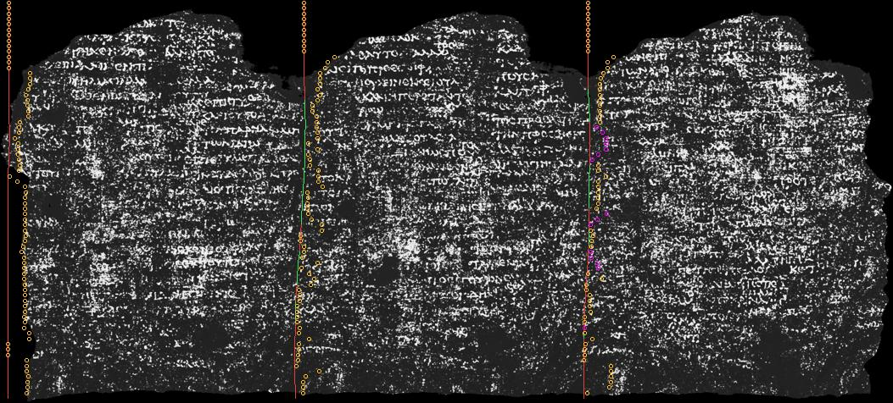
| gap | kept windows | step flags | one turn (vox) | switch would move gap (vox) | switch visible |
|---|---|---|---|---|---|
| 1 | 36 | 0 | 53,980 | 788 | no |
| 2 | 22 | 15 | 53,920 | 848 | no |
9 lines · 95 points
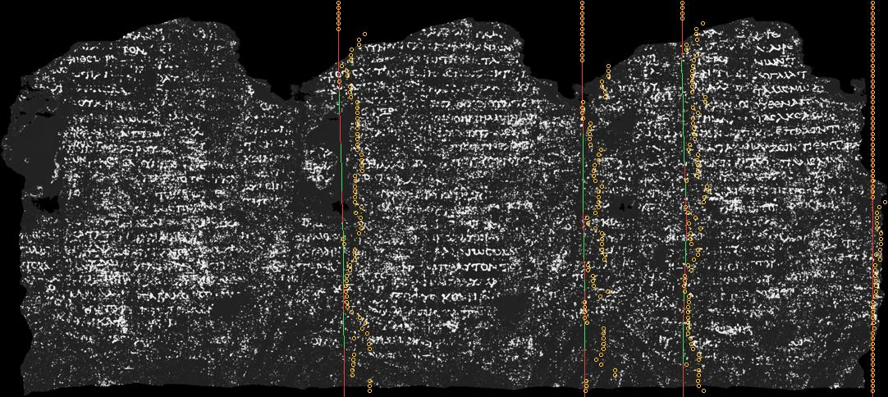
| gap | kept windows | step flags | one turn (vox) | switch would move gap (vox) | switch visible |
|---|---|---|---|---|---|
| 0 | 36 | 0 | 55,950 | 16,994 | yes |
| 1 | 32 | 0 | 55,460 | 17,484 | yes |
| 2 | 43 | 0 | 55,270 | 17,674 | yes |
1 lines · 8 points
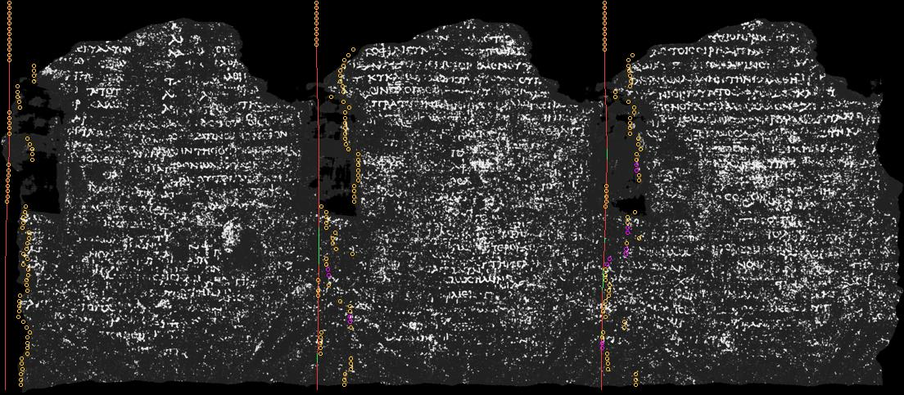
| gap | kept windows | step flags | one turn (vox) | switch would move gap (vox) | switch visible |
|---|---|---|---|---|---|
| 1 | 12 | 4 | 57,395 | 1,109 | no |
| 2 | 13 | 10 | 56,760 | 1,744 | yes |
5 lines · 80 points
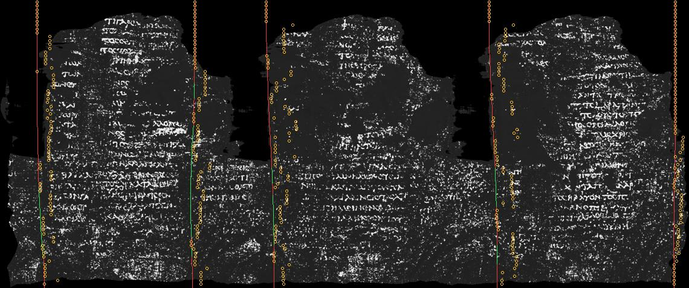
| gap | kept windows | step flags | one turn (vox) | switch would move gap (vox) | switch visible |
|---|---|---|---|---|---|
| 0 | 20 | 0 | 60,090 | 15,642 | yes |
| 1 | 38 | 0 | 59,060 | 14,612 | yes |
| 2 | 19 | 0 | 59,540 | 15,092 | yes |
| 3 | 17 | 0 | 59,010 | 14,562 | yes |
4 lines · 58 points
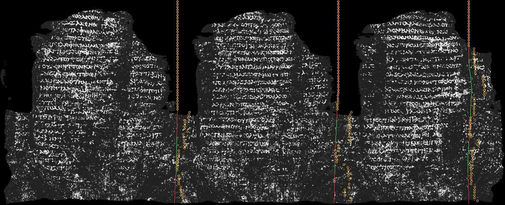
| gap | kept windows | step flags | one turn (vox) | switch would move gap (vox) | switch visible |
|---|---|---|---|---|---|
| 0 | 17 | 0 | 61,000 | 6,828 | yes |
| 1 | 14 | 0 | 60,450 | 6,278 | yes |
| 2 | 34 | 0 | 60,470 | 6,298 | yes |
9 lines · 112 points
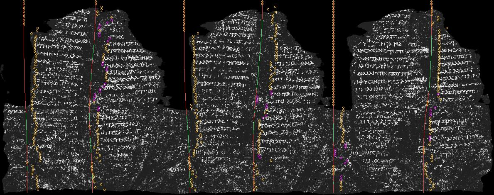
| gap | kept windows | step flags | one turn (vox) | switch would move gap (vox) | switch visible |
|---|---|---|---|---|---|
| 0 | 16 | 0 | 62,910 | 3,086 | yes |
| 1 | 28 | 21 | 61,780 | 1,956 | yes |
| 2 | 22 | 0 | 62,390 | 2,566 | no |
| 3 | 37 | 11 | 61,640 | 1,816 | no |
| 4 | 10 | 10 | 62,030 | 2,206 | yes |
| 5 | 24 | 7 | 61,440 | 1,616 | yes |
4 lines · 31 points
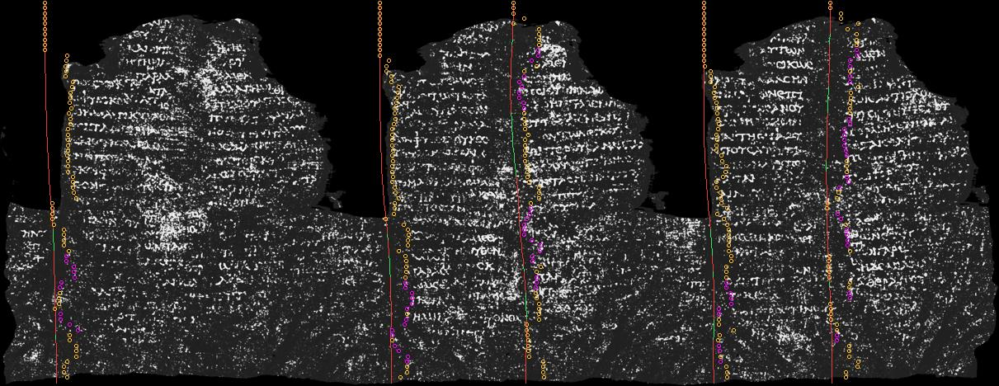
| gap | kept windows | step flags | one turn (vox) | switch would move gap (vox) | switch visible |
|---|---|---|---|---|---|
| 0 | 7 | 11 | 64,250 | 1,482 | yes |
| 1 | 8 | 14 | 63,590 | 822 | no |
| 2 | 24 | 24 | 62,720 | 48 | no |
| 3 | 14 | 10 | 63,000 | 232 | no |
| 4 | 16 | 27 | 62,360 | 408 | no |
6 lines · 73 points
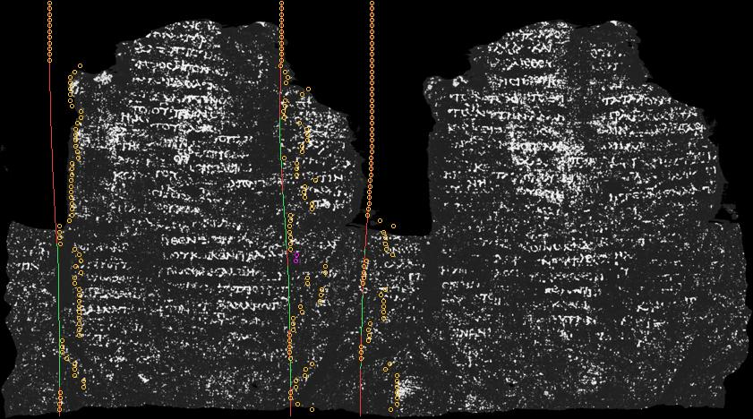
| gap | kept windows | step flags | one turn (vox) | switch would move gap (vox) | switch visible |
|---|---|---|---|---|---|
| 0 | 26 | 0 | 65,940 | 9,884 | yes |
| 1 | 39 | 2 | 65,180 | 9,124 | yes |
| 2 | 13 | 0 | 65,940 | 9,884 | yes |
3 lines · 55 points
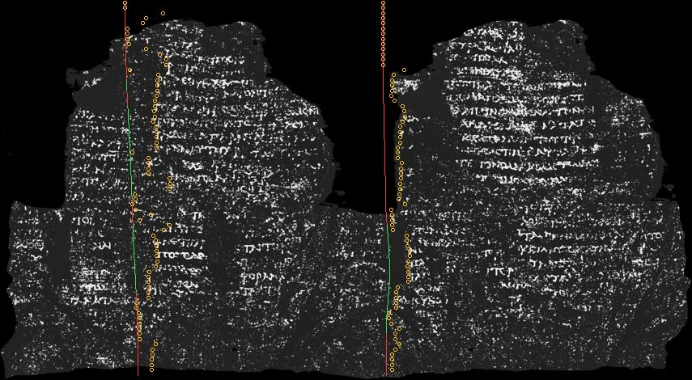
| gap | kept windows | step flags | one turn (vox) | switch would move gap (vox) | switch visible |
|---|---|---|---|---|---|
| 0 | 37 | 0 | 65,620 | 15,412 | yes |
| 1 | 22 | 0 | 66,720 | 16,512 | yes |
3 lines · 24 points
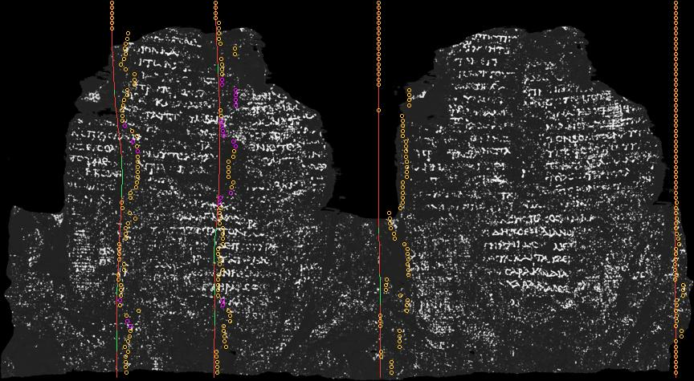
| gap | kept windows | step flags | one turn (vox) | switch would move gap (vox) | switch visible |
|---|---|---|---|---|---|
| 0 | 20 | 6 | 66,650 | 2,970 | yes |
| 1 | 19 | 17 | 66,330 | 2,650 | yes |
| 2 | 9 | 0 | 67,570 | 3,890 | no |
1 lines · 16 points
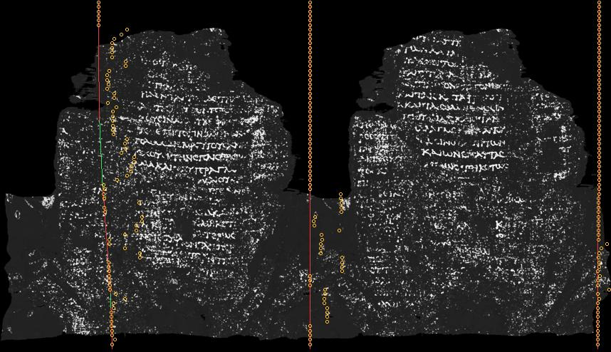
| gap | kept windows | step flags | one turn (vox) | switch would move gap (vox) | switch visible |
|---|---|---|---|---|---|
| 0 | 21 | 0 | 66,320 | 10,488 | yes |
| 1 | 1 | 0 | 67,600 | 11,768 | no |
2 lines · 26 points
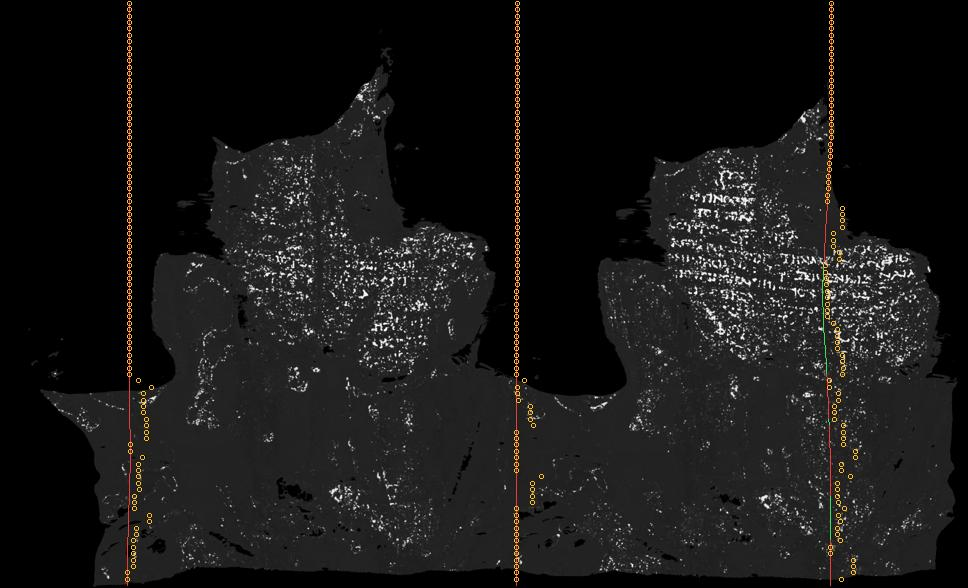
| gap | kept windows | step flags | one turn (vox) | switch would move gap (vox) | switch visible |
|---|---|---|---|---|---|
| 2 | 29 | 0 | 70,560 | 15,116 | yes |